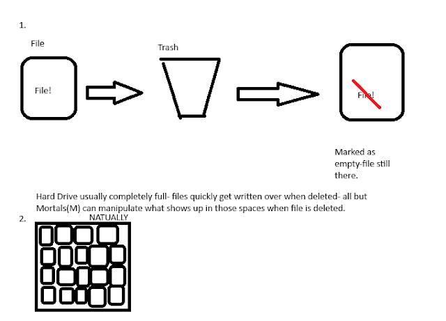

(Sep 26, 2023) In Fray Theory, matter breaks down as it gets further away from the center of the universe. This is a rule to help
keep the universe finite and tangible- but, with that, I must come up with a reason. This is what I aim to do today.
Vsauce Video
My thought process on this was that the way things break down is much like how deleted data on a computer gets
written over when it is deleted. As I understand it, when a file is deleted conventionally (thrown into recycle bin
or deleted in the file system), it sits there for a moment before being permanently deleted. However, it isn't just
cleanly wiped- the space that it took up says that it is empty for new data to be put in, but it is still
technically there. So, with much technical knowledge, it is possible to recover some, or even all of the data.
The first main idea here is that the space is marked there to be written over while the old data is still there, and
then it is permanently deleted.
Antvemon Minecraft Video
The second idea here is a hard drive with no more space to spare. A finite universe would only be able to contain a
certain amount of data, albeit incomprehensibly large, but still finite. And so, at the edge of the universe, at the
edge of where the ULT-CELs can reach, at the edge of the computer, things just... get deleted. The universe is
constantly moving out from its center, so that means the universe has a calculable radius in which things are able
to exist.
So, combining these two concepts- things at the end of the universe are deleted, but deleted as in they are able to
have their data written over.
This is where magic exists.

As the stability of the universe gets weaker further out, less powerful beings (CELs, ULT-IMs, IMs, HF-IMs) are
naturally able to manipulate the 'code' of reality. This code is the quarks and leptons and such of the universe,
something that I'm working on. This is obviously more stable at the 80-95% point at the end of the universe than it
is beyond that, but it takes like a million and a half years to even move out a percentage so its fine. The ultimate
goal is to move inwards, which means no more magic, but definitely more stability. I think this is a pretty cool
universe design- what do you think?